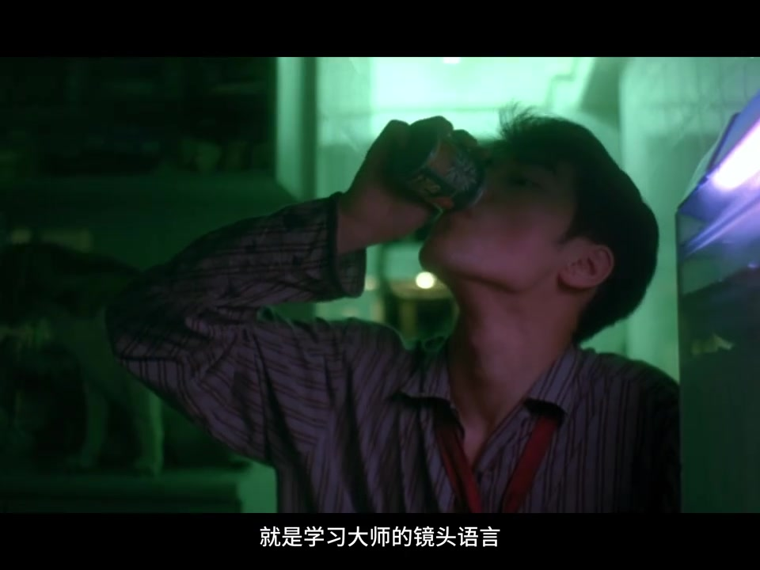
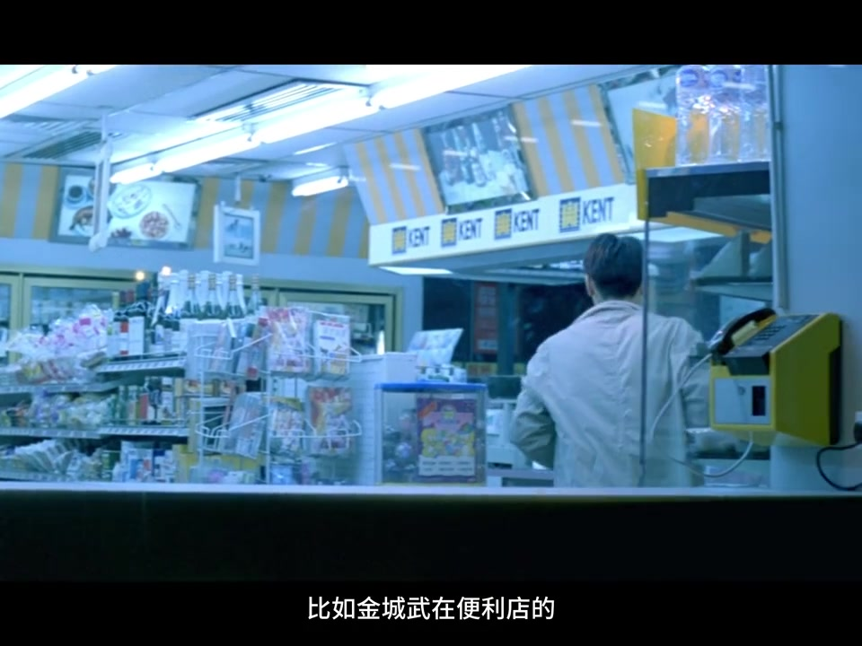
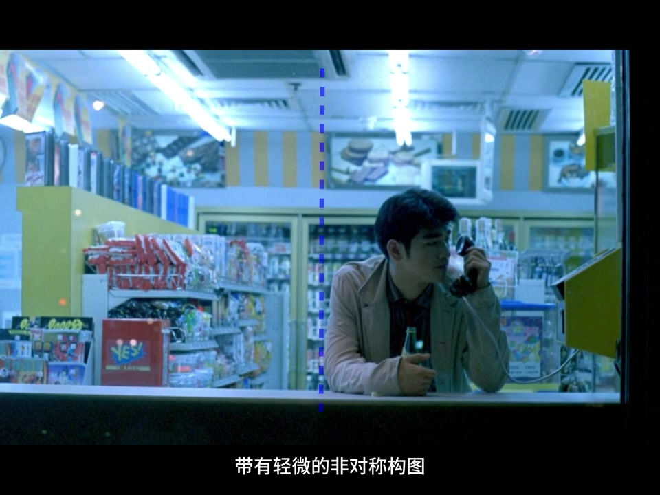
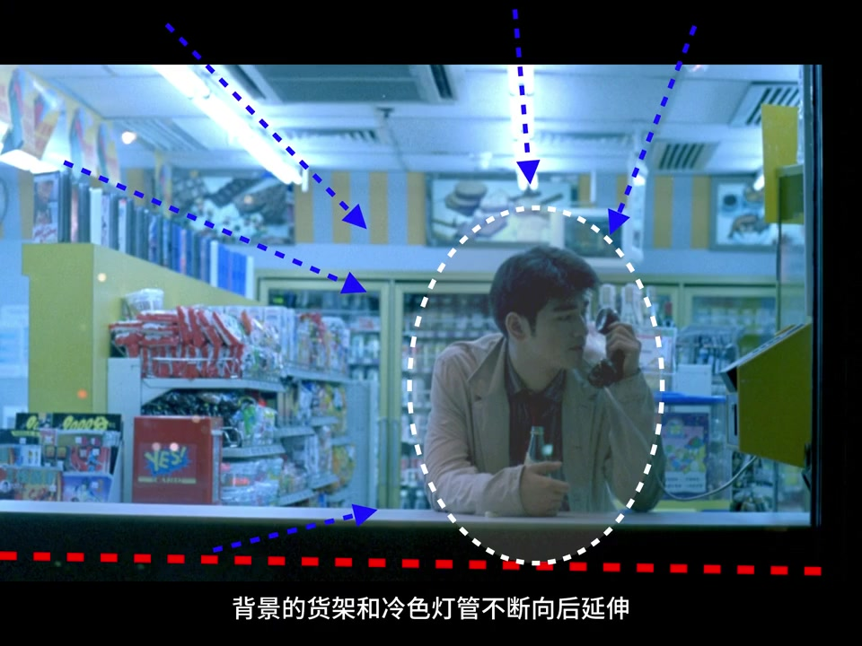
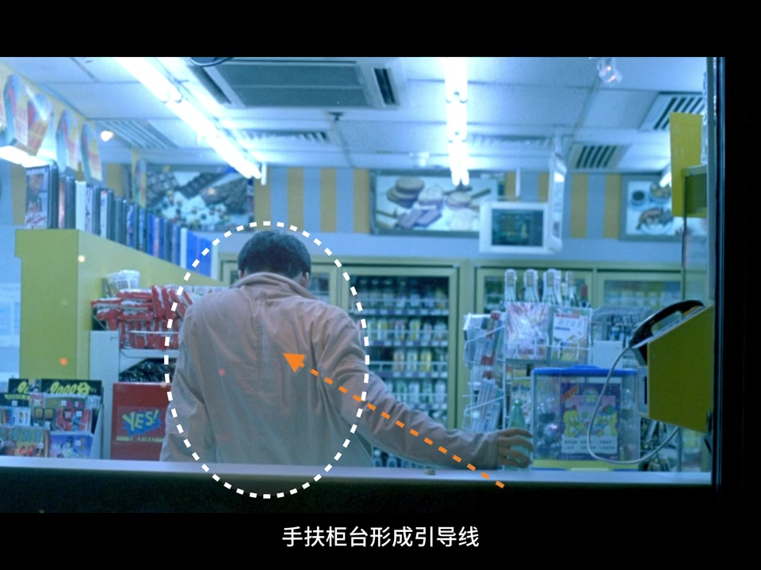
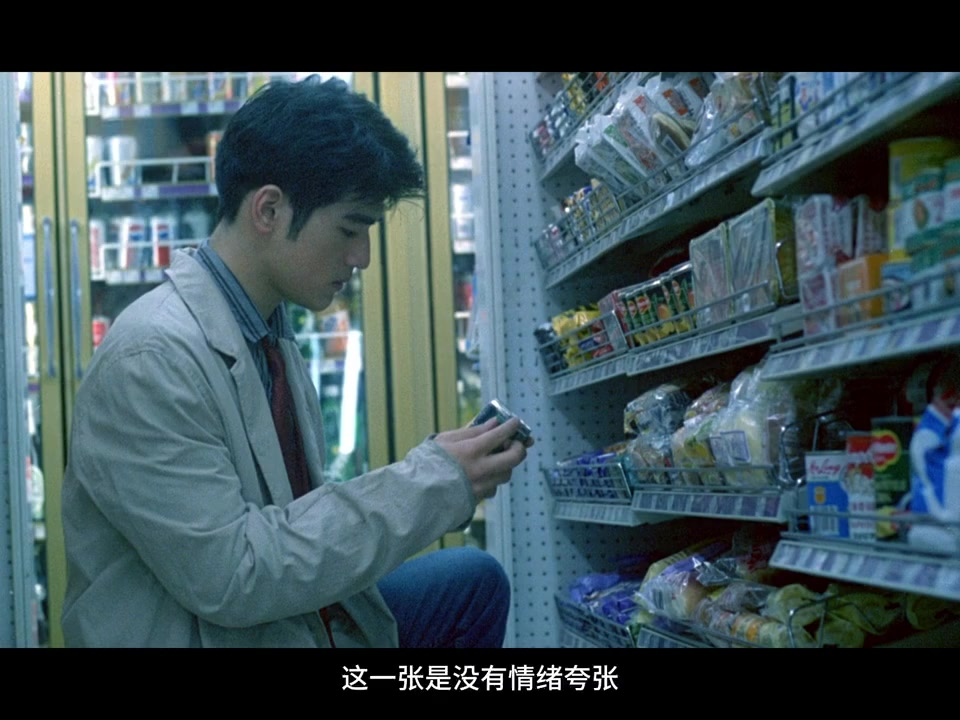
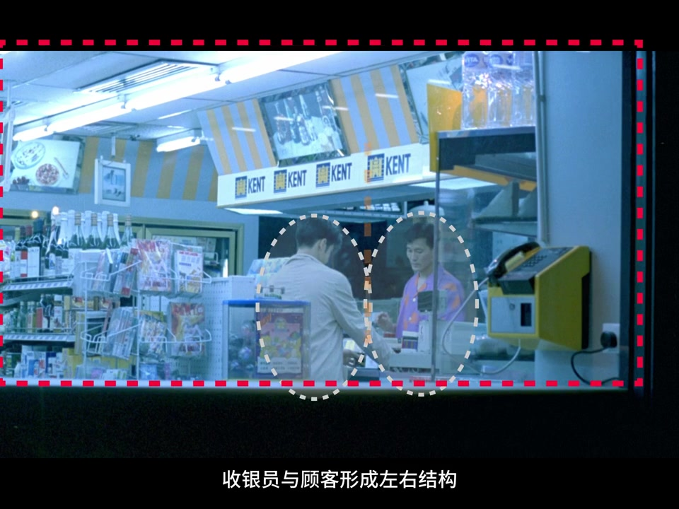
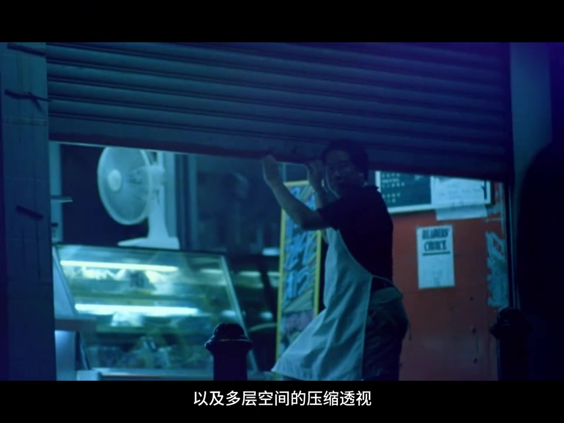

开场背景
不是先谈器材，而是先谈镜头语言
视频一开场就抛出立场：如果审美有高低，提升摄影审美最快的方式，是学习大师的镜头语言。本期样本是王家卫《重庆森林》——讲述者认为这部三十年前的作品至今仍有热度，很大程度因为导演独特的摄影方式“太超前”。
多数人拆解王家卫时会盯着慢门、抽帧、调色等专业技巧。讲述者立刻把问题翻过来：普通人没有专业相机，难道就无法学习？答案是换路径——用电影导演的方式学摄影：安排画面层次、控制情绪氛围、用色调讲故事。
说明：Whisper 将“审美”识别为“神尾”、“慢门/抽帧”识别为“漫门/抽针”、“炙手可热”识别为“至少可热”。下文叙述依据可见字幕与画面校正，完整转录区保留原始分段。

章节 01 · 00:41–01:16
便利店中景：拍的不是店，是人在城市里的状态
《重庆森林》前半段常拍孤独。讲述者以金城武在便利店的一组叙事镜头为例：这一组其实拍的不是便利店本身，而是人在城市里的状态。
画面被拆成几个层次：典型中景，带轻微非对称构图；人物放在画面偏右；前景柜台形成横向分割线，把空间切成“人”与“环境”两层；背景货架与冷色灯管不断向后延伸，形成强烈纵深压缩。重点不在动作，而在状态——人被空间轻轻包裹，生活仍在继续。



章节 02 · 01:16–01:34
手机怎么拍这组中景
讲完电影画面，视频立刻落到可操作步骤。讲述者没有要求专业机身，而是给出一组手机参数化提示：机位、距离、焦段与对焦点。
仿拍清单（讲述者原意）
- 让模特自然站在柜台后方。
- 机位与胸口齐平或略低，增强压迫感。
- 手机距离大约两米，镜头放大至二至三倍，用长焦压缩空间。
- 对焦在人物脸部，让背景稍微虚化，但保留货架结构。
章节 03 · 01:34–02:07
背影空间延伸：消失点把视线推向深处
下一组被定义为“纵深消失点构图 + 背影趋势”。人物背对镜头，手扶柜台形成引导线；两侧货架向中心收缩，把视线自然推向画面深处。讲述者强调：背影在这里不是遮挡，而是一种开放式情绪表达——空间在说话，人只是其中一部分。
手机拍法与前一镜相近：抬到眼睛高度，放大约两倍；模特放在货架中轴线，必须让货架形成收缩透视并“夹住”画面。

章节 04 · 02:07–02:40
货架选择特写：只拍一个动作——犹豫与选择
这一张没有情绪夸张，也没有大空间，只留下选择动作。货架延伸把视线引向人物；表达的是人在消费空间里的犹豫与日常——停留、犹豫、拿起物品。镜头只捕捉一个动作：选择。
手机仿拍
- 把手机架在货架约 45 度方向，距离模特约 1 米。
- 弯腰与模特齐平，镜头放大至两倍，尽量让货架填满画面。
- 追求故事感就对焦在手上；追求人物表现就对焦在面部。

章节 05 · 02:40–03:14
隔窗关系镜头：拍关系，不拍个人
收银区对话被拆成“双人物对峙式构图 + 框架构图”。收银员与顾客形成左右结构，两人中间被柜台分隔，窗景与收银台设备形成视觉边界，顶部招牌强化空间封闭感。这一张是关系而不是个人：一个在服务，一个在等待；一个在内部，一个在外部——把人物放进社会空间。
拍摄要求必须拍出分隔感：一定要隔着窗口拍；站在窗口外，镜头放大至三倍，让窗口切割画面。

章节 06 · 03:14–结束
收束：真正拍的是人在空间里的停留
讲述者邀请观众总结王家卫式影像语言：日常空间、孤独人物，以及多层空间的压缩透视。然后给出一句更锋利的判断——他真正拍的，从来不是空间，而是人在空间里的停留。
视频以鼓励收尾：恭喜你学会了王家卫导演的生活叙事手法；欢迎在评论区晒仿拍；若没有专业设备仍想持续提升审美与拍照技术，欢迎关注后续“上手难度低的大师仿拍教程”。

这一集按时间带走了什么
从“审美靠拆镜头”到四组便利店叙事：中景非对称、背影消失点、货架选择、隔窗关系；每组都配了手机机位与焦段提示。
它留下的核心不是滤镜配方，而是观察方法：先看人如何被空间包围、引导与分隔，再用手机把这种关系仿出来。